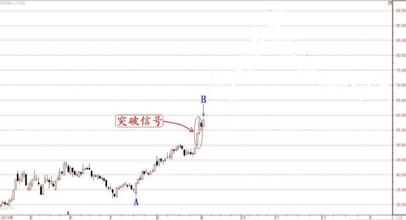
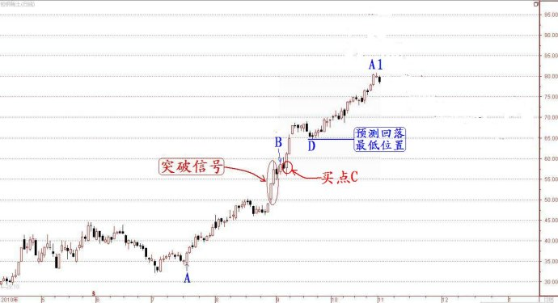
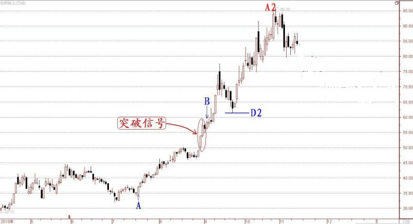

第292篇•股市大涨证明亚当理论失效了吗？
谷为陵
我在上一篇博文中运用亚当理论对于沪指未来短期走势进行了预测，其结论是将继续快速下跌，但沪指今天却出现了罕见的大涨，将亚当理论的预测结果整个给推翻了。这是否证明亚当理论就是一个不靠谱的理论，就像某些网友所说的只是“纯属娱乐”和“瞎蒙”呢？
我看了网友们的留言，我认为那些对亚当理论不认同的网友，还是对于亚当理论不了解。亚当理论的本质是什么？它是一个预测的理论吗？不是，它是一个决策的理论。如果不了解亚当理论的这个本质，那么，就不可能对该理论进行更深入的领悟了。
什么是决策理论？就是专门针对当下交易与操作的理论，而非事后解释历史现象或者预测未来走势的理论。亚当理论的决策性体现在什么方面呢？我认为有三点：
第一，该理论提出了交易的方法，那就是顺势交易。顺势交易是一种确定性最高的操作方法，而逆势操作就没有确定性可言，那才是瞎蒙。
第二，该理论善于预测短期趋势。为了保证顺势交易的成功，就必须保证能够买在上涨趋势上，而卖在下跌趋势开始时。由于亚当理论的使用对象主要是期货交易员，期货交易是高杠杆交易，对于价格的波动极其敏感，往往涨跌3～5%就能够决定生死，所以，期货交易就需要对于价格的短期波动进行强制性的“预测”，并根据预测结果进行相关的买卖操作。因此，期货交易员就迫切需要一种交易理论，能够对于短期价格趋势进行高概率地预测，亚当理论就是为此而创立的，该理论的强项恰恰是预测价格的短期趋势——当价格出现强烈的上涨或者下跌趋势时，该理论预测得越准。
第三，该理论设定了与任何预测结果相配套的一整套操作系统。亚当理论的操作方法就是一句话：“截断亏损，让利润奔跑”（Cut your
losses short and let your profits
run）。这句话的意思是，当你通过中心对称图发现价格趋势将会继续上涨而买入后，你就应该立即设定止损位，并且会面临两种卖出选择：
一是若价格一直处于上涨趋势，很快远离了你设定的止损位，你已经开始有盈利了，那么，你就没必要再设止损位了，而应该及时设定止盈位，且随着价格的不断上涨，止盈位也要不断上移。只要价格没有回到你设定的止盈位，那么，你就应该一直持仓不动，让利润达到最大化。这就是“让利润奔跑”的意思。
二是在买入后，还没有产生盈利，价格就出现回落并触及了你设定的止损位，那么，你就应该果断卖出止损，绝不能有任何犹豫。这就是“截断亏损”的意思。
有人会问，亚当理论并没有告诉我们如何做到每次操作都必然成功，假若连续操作10次甚至100次都不成功，那么，即使每次都及时止损，每次亏损都不大，但10次、100次的失败操作的累计总亏损也是不小的呀。如果亚当理论不能从根本上提高每一次的操作成功率，亚当理论还有实际应用的价值吗？
亚当理论注意到了这个问题，其根本性的解决方法是提高趋势预测的准确度，为此，该理论提出了四点操作细则：
其一，关注趋势改变。亚当理论不研究拐点，它只研究出现拐点之后的趋势变化。当下跌趋势发生转折后，只要出现新的上涨趋势，就一定会出现价格不断上涨的情况，上涨趋势的表现一定是一浪高过一浪的，亚当理论就是关注这个重要变化。亚当理论认为，在这种情况下，趋势应该是发生改变了，为什么呢？因为以前价格在下跌，而现在价格在不断上涨。价格为什么会上涨？亚当理论不回答这个问题，它认为上涨就是上涨，没有什么好解释的。这当然是属于纯技术性的表述。
其二，是关注趋势的延续。为了验证上涨趋势能够延续，亚当理论提出了两个市场指标：突破、缺口或者当日高低价差大。在“突破”方面，若一轮上涨趋势能够突破的历史高点越多，突破的历史时间范围越长，则突破的有效性越高，趋势继续上涨的可能性越大。在“缺口或者当日高低价差大”方面，在一轮上涨趋势中，出现“缺口或者当日高低价差大”，都预示着做多力量在聚集，趋势有进一步持续的可能性。
其三，应该关注离“现在”时点最近的历史与未来价格走势，因为离“现在”时点最近的走势，中心对称性最高。
其四，应该关注与“现在”时点最近的移动速率最快的价格走势，因为移动速率最快的价格走势，中心对称性最高。
说白了，亚当理论追随趋势的要旨是，要等到看清楚了上涨趋势的确立后，才进场交易，是“不见兔子不撒鹰”，以此来提高操作的成功率。当然，不管用什么方法对价格进行预测，都不能保证百分之百的准确度，为此，亚当理论的对策就是层层设防：一方面尽量提高预测的准确度，另一方面，执行最严格的止损与止盈操作纪律。如此，就能够提高操作成功率，并且保证赚钱的操作是大赚，而赔钱的操作只是小赔，长期的大赚小赔地累计下去，就一定会获得长期成功。
即使讲了这么多，也许还有人会不明白，那我就再啰嗦两句，将亚当理论再完整地叙述一遍。我下面说的话对于理解亚当理论很重要，希望大家能够仔细看看清楚：
其实，亚当理论的本质就是一种以低吸高抛为目的，以追涨杀跌为手段的交易方法。为了达到低吸高抛的目的，亚当理论主张顺势交易，以便买在上涨趋势的低位，而卖在下跌趋势的高位，从而获得价格差价。为此，就要判断一个上涨行情会否持续，或者说一个上涨趋势能否持续。只有在能够持续的上涨趋势中，才能够实现低吸高抛。那么，怎样判断一个上涨趋势能否持续呢？亚当理论提出了中心对称说，即，离“现在”时点最近的、且移动速率最快的价格走势，具有最好的中心对称性。出现中心对称性，就意味着未来短期价格能够大致复制近期的历史价格走势，这就意味着，根据近期的历史价格走势，就能够预测未来短期价格走势。所以，亚当理论就最关注那些出现强势突破的趋势改变情形，该理论认为这样的趋势改变，从大概率上看，是一轮较大上涨趋势形成的信号，上涨趋势应该会持续，且极有可能会按照中心对称法则进行发展。于是，亚当理论就赌这个上涨趋势是一段大趋势，或者按我的说法是一个主升浪，亚当理论就在上涨趋势确认后的那一点设定买点，并随即设定止损点，以防这个上涨趋势突然转势，因为不管用什么方法预测，讲求的只是一个概率，既然是概率，就一定会有意外情况发生。
以上讲的是亚当理论的理论层面的东西，若亚当理论仅仅停留在这个层面，那么，该理论就毫无价值。亚当理论的高妙之处，是在这个理论层面之上建立一套令人叫绝的操作方法，理论与方法的完美结合，才最终成就了伟大的亚当理论。
那么，亚当理论在操作层面上的特点是什么呢？该理论在操作层面上，是完全依赖中心对称法则得到的预测结果进行后续相关操作，其中，最重要的就是依据预测据结果设定止损点与止盈点。
为了更好的说明这个问题，我举一个包钢稀土的实例加以说明。下图是包钢稀土2010年4月至2011年1月的日K线图的一部分。该股在2010年8月底出现两根突破型大阳线，预示着股价有一波上涨趋势，但到底趋势会怎样呢？

依据亚当理论，图中的A点到B点属于快速上涨，应该具有一定的中心对称性。于是，我们就以B点为中心，画出A点到B点的中心对称图“B—A1”（就是A点到B点旋转180度，再将两个B点重叠），如下图所示：

从上图可以看出，在B点后，股价将继续拉出大阳线大涨至69元，其后，在小幅回落到D点的65元后，股价将继续大涨到80元左右。这就预示着，在B点的57元附近买入，将是一个很好的买点，于是，这就产生了买点C。买点C在57元附近有两天的建仓时间。为了以防股价在买入后出现回落，我们可将止损点设在53元附近。
好了，以上是亚当理论的中心对称图的预测走势以及相应操作，下面，让我们来看看包钢稀土这段时间的实际股价走势，如下图所示：

在实际的价格走势中，B点到A2点的上涨趋势与亚当理论预测的大致相同，只有两点稍有出入：一是回落幅度D2点要比D点低一些，D点为65元，而D2点61元，但还没有触及53元的止损位，也没有碰到57元的买入价位，所以，不用止损，可以继续持仓。二是最高价A2点要比A1点高，A1点预测到80元，而A2点达到了96元。但不管A2点高多少，因上涨趋势没有改变，所以，可以一直持仓。
从以上的分析，可以看出，亚当理论在一轮快速上涨行情里，还是可以找到恰当的买点的，并且可以在趋势没有发生转折的情况下，一直持仓。
我留给大家的一个问题是，根据上面的实际走势图，“亚当式卖点”在哪里？
现在，我再说说我昨天用亚当理论预测沪指近期会继续快速下跌，而今天沪指为什么却大涨呢？这至少说明两个问题：
第一，亚当理论的中心对称法则，并未回避意外情况的发生，相反，亚当理论随时准备应付意外情况。一个趋势终归是会转折的，反转随时会发生，要是没有反转，一个趋势就会永远持续下去。
第二，应该说，今天沪指出现大涨，是出乎我的意料的。因为，沪指在跌破2000点后，出现了加速下跌之势，这正是应用亚当理论进行中心对称预测的好时机，但为什么亚当理论就在这个本来很有把握的时候失效了呢？这是耐人寻味的。股市在该跌的时候不跌，反而大涨，这不是正常现象，这是市场异象。难道股市真的拒绝下跌了吗？难道股市的跌势已经衰竭了吗？如果是，那是为什么？亚当理论不会回答为什么的问题，这个问题只能由我们自己回答。
我仔细看了一下今天的盘面，发现了三个现象：一是游资主力启动了大基建概念，包括这么几大板块：高铁与城铁板块、城镇化板块——沥青板块、路机板块、水泥板块、机械板块等；二是基金主力启动了商业银行股和保险股；三是基金主力在狂卖以贵州茅台、洋河股份为首的高价白酒股。
我认为，大基建概念是新的政策性题材，应该是近期市场的主流热点，期间会冒出较多的黑马股，短线操作的机会就在其中。而银行股和保险股，可能会走慢牛行情，但难以出现暴涨行情。而以白酒股为代表的高价股，短期属于被抛售的对象，还有可能继续下跌。